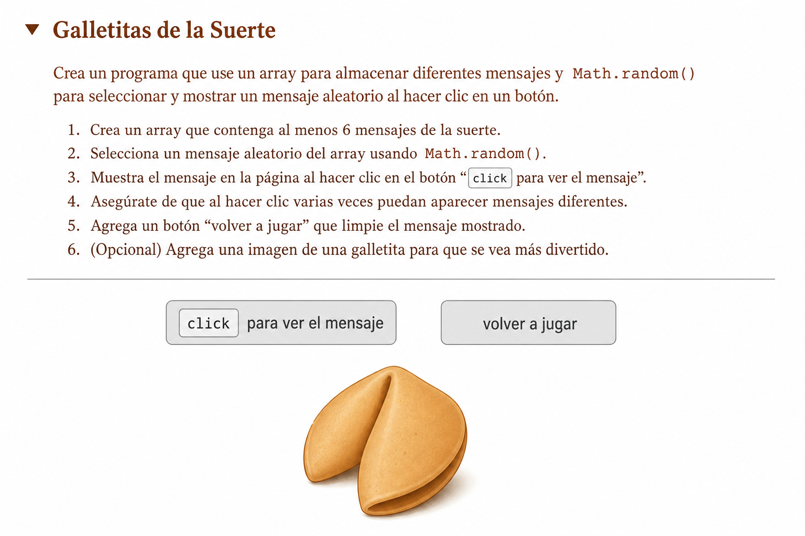
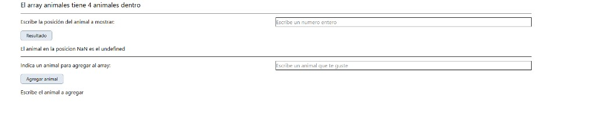

Resumen de la práctica del array de animales y de la página HTML que la usa.
Un archivo .html es texto que el navegador lee de arriba abajo. Casi siempre tiene dos zonas: la cabecera (configuración) y el cuerpo (lo que ves en pantalla).
<!DOCTYPE html>Le dice al navegador que esto es HTML moderno. No es una “caja” con cierre; va sola arriba del todo.
<html lang="es"> … </html>Envuelve todo el documento. lang="es" indica que el texto está en español (accesibilidad y buscadores).
<head> … </head><meta charset="UTF-8"> — para que las tildes y la ñ se vean bien.<meta name="viewport" …> — para que en el móvil el tamaño y el zoom se comporten bien.<title>…</title> — el título de la pestaña del navegador.<style>…</style> — hojas de estilo en el mismo archivo (colores, márgenes, fuentes). También se puede enlazar un .css externo con <link>.<script>…</script> — a veces va en head (con defer) o, en ejercicios sencillos, al final del body para que ya existan los elementos de la página cuando corre el JavaScript.<body> … </body>Aquí va todo lo visible: títulos, párrafos, listas, botones, cuadros de texto, imágenes, etc.
<h1>, <h2> — encabezados (título grande, subtítulo).<p> — párrafo de texto.<section> — agrupa un bloque de contenido con sentido (como un capítulo).<div> — caja genérica para agrupar cosas o dar estilo (como la caja azul de esta misma página).<ul> + <li> — lista con viñetas.<strong> — texto importante (suele verse en negrita).<code> y <pre> — trozos de código; pre respeta saltos de línea y espacios.class="…" — nombre que enlaza ese elemento con reglas CSS (por ejemplo bloque bloque--arrays pinta cada sección de un color).No es este archivo, pero suele parecerse a esto (los id y nombres pueden cambiar en tu chuleta):
<!DOCTYPE html>
<html lang="es">
<head>
<meta charset="UTF-8">
<title>Animales</title>
</head>
<body>
<h1>Lista de animales</h1>
<p id="cantidad"></p>
<input type="number" id="posicion" placeholder="número">
<button type="button" onclick="mostrarResultado()">Resultado</button>
<p id="resultado"></p>
<input type="text" id="nuevoAnimal" placeholder="nombre">
<button type="button" onclick="agregarAnimal()">Agregar animal</button>
<p id="lista"></p>
<script>
const animales = ["gato", "perro", "conejo", "perico"];
// funciones que leen los input, usan el array y escriben en los <p>
</script>
</body>
</html>id="cantidad" (o similar) — el JavaScript pone ahí cuántos animales hay (animales.length).input type="number" — el usuario escribe la posición; el script la lee con document.getElementById("posicion").value.button + onclick="…" — al pulsar, el navegador ejecuta esa función de JavaScript.p id="resultado" — donde se muestra el animal de esa posición (o un error).input type="text" — nombre del animal nuevo; luego push al array y se actualiza la lista en p id="lista".<script> al final — define el array y las funciones; así el HTML de arriba ya existe cuando se ejecuta el código.Un array es una lista ordenada de cosas. Cada cosa tiene una posición (índice) que empieza en 0: el primero es 0, el segundo es 1, y así.
Ejemplo:
const animales = ["gato", "perro", "conejo", "perico"];
// índices: 0 1 2 3animales.length = cuántos elementos hay (aquí, 4).animales[2] = el elemento en la posición 2 → "conejo".animales.push("tortuga") = añade un elemento al final de la lista.animales.join("<br>") = junta todos los textos con un separador (en la página usan salto de línea HTML).Imagina una cajita con animalitos en fila. Arriba te dice cuántos hay.
Botón «Resultado»: escribes un número (la posición) y te dice qué animal es.
Botón «Agregar animal»: escribes un nombre y lo pone al final de la fila; luego vuelve a contar y te muestra la lista.
Si el campo del número está vacío y pulsas «Resultado», parseInt("") no es un número válido → sale NaN (Not a Number).
La condición posicion < 0 || posicion > animales.length - 1 con NaN da false (NaN no es menor que 0 ni mayor que 3 de forma útil para lo que esperas), así que entra en el else y hace animales[NaN] → undefined.
Idea para arreglarlo: comprobar antes si el valor es vacío o si Number.isNaN(posicion), y mostrar un mensaje claro en lugar de usar la posición.
Para 4 animales, los índices válidos son 0, 1, 2 y 3. El código usa animales.length - 1 como máximo (aquí 3), que es correcto.
document.getElementById("...") — coge un elemento de la página por su id..value — lo que el usuario escribió en un input..innerHTML — cambia el HTML dentro de un párrafo o título (ojo con texto que venga del usuario si fuera una app real; aquí es un ejercicio sencillo).console.table(animales) — en las herramientas del navegador (F12) muestra la lista en forma de tabla.file:// y «Unsafe attempt…»)La consola (pestaña «Consola» al abrir las herramientas de desarrollo, suele ser F12) es donde el navegador escribe avisos y errores. El fondo rojo o rosa suele ser un error: algo que el navegador ha bloqueado o que ha fallado.
Aparece cuando abres la página como archivo del disco, con una dirección que empieza por file:///. El navegador (Chrome, Edge, el visor embebido de Cursor, etc.) trata cada ruta file:// como un origen distinto por seguridad, para que una página local no pueda cargar a la ligera otras rutas de tu ordenador.
La parte de «from frame» indica que hay un marco: por ejemplo un <iframe>, o una vista previa que muestra tu HTML dentro de otro documento. Ese marco intenta cargar otro file:// (aunque sea casi la misma carpeta) y el navegador lo corta.
A veces las dos URLs se ven «iguales» pero no lo son del todo (espacios, guiones o cómo se escriben como %20 en la barra de direcciones). Para el programa son dos orígenes distintos y por eso sale el error.
index.html:1Eso es una pista de dónde se registró el mensaje; muchas veces apunta al documento del marco o a la primera línea del HTML. No siempre significa que el fallo esté literalmente en la línea 1. Lo importante es leer el texto del error: carga insegura entre file:// y otro file:// en un frame.
http://localhost:… en lugar de file:///. Por ejemplo, en una terminal en la carpeta del proyecto: npx --yes serve . o usar la extensión «Live Server». Así todo comparte el mismo origen y suele desaparecer ese bloqueo..html con doble clic en el Explorador de archivos o en el navegador solo esa pestaña, sin otra página «padre» que lo incruste con otro file://.<iframe src="otro.html"> con archivos locales, con file:// suele fallar: o sirves los dos archivos con un servidor local, o enlazas con <a href="…"> en lugar de iframe.En resumen: el rojo en la consola aquí es seguridad del navegador con archivos locales y marcos, no necesariamente un error en tu lógica de JavaScript del array.

assets/galletitas-suerte.png par ta propre capture si tu préfères.C'est un petit jeu de biscuits de la fortune : au départ tu vois une image de biscuit fermé. Quand tu cliques sur « click pour voir le message », le programme doit choisir au hasard un texte dans un tableau de messages, l'afficher, remplacer l'image par un biscuit ouvert, puis désactiver le bouton. Le bouton « volver a jugar » sert à recommencer (souvent avec location.reload() ou en réinitialisant l'état à la main).
<head> — métadonnées, Tailwind via CDN, styles @layer base, favicon, titre.<details> / <summary> — bloc repliable avec les consignes et liens (MDN, W3Schools).<ol> — les 6 étapes de l'exercice.<button> — id="boton-mensaje" + onclick="mostrarMensaje()" ; l'autre onclick="recargar()".<img id="galleta" src="galletas1.png"> — image à modifier en JavaScript (.src vers l'image ouverte).<p id="mensaje"> — zone où afficher le message tiré au sort.<script src="./js/app.js"> — toute la logique (tableau, Math.random, getElementById, etc.) dans un fichier séparé.Math.random() et Math.floor() — obtenir un entier entre 0 et longueur - 1.document.getElementById(...) pour cibler bouton, image et paragraphe.textContent ou innerHTML) et img.src pour l'image ouverte (comme sur l'image d'aide cambiarAtributo.png).onclick dans l'exercice).disabled = true sur boton-mensaje après le clic.console.log pour déboguer pendant que tu codes.Le fichier JavaScript ./js/app.js n'est pas inclus ici : c'est à toi de l'écrire selon les consignes.
<!DOCTYPE html>
<html lang="es">
<head>
<meta charset="UTF-8">
<meta name="viewport" content="width=device-width, initial-scale=1.0">
<script src="https://cdn.jsdelivr.net/npm/@tailwindcss/browser@4">
</script>
<style type="text/tailwindcss">
@import "tailwindcss";
@layer base {
p {
@apply mb-2
}
button {
@apply rounded-md bg-slate-200 border-1 border-slate-400 px-4 py-1 my-1 text-sm cursor-pointer disabled:opacity-50
}
details {
@apply mb-4 pb-4 border-b-slate-700 border-b-1 text-orange-800 text-xs italic font-serif
}
summary {
@apply text-2xl
}
ol {
@apply list-decimal list-inside ml-6 mb-4
}
kbd, code, var {
@apply text-red-800 font-mono bg-slate-100
}
a {
@apply border-b-1 text-blue-800
}
}
</style>
<link rel="shortcut icon" href="favicon.ico" type="image/x-icon">
<title>Galletitas de la Suerte</title>
</head>
<body class="container w-4/5 mx-auto">
<!-- Instalaremos Live Server de Ritwick Dey -->
<details>
<summary>Galletitas de la Suerte</summary>
<p>Trabajaremos con un array y los métodos <code>floor</code> y <code>random</code> del objeto <code>Math</code>.
<a href="https://developer.mozilla.org/en-US/docs/Web/JavaScript/Reference/Global_Objects/Math/random">MDN</a>
</p>
<p>Para mostrar el mensaje en pantalla:</p>
<ol>
<li>Creamos un <a href="https://www.w3schools.com/js/js_array_methods.asp" target="_blank"
rel="noopener noreferrer">array</a> de mensajes.
(<a href="https://developer.mozilla.org/es/docs/Web/JavaScript/Reference/Global_Objects/Array" target="_blank"
rel="noopener noreferrer">+</a>).</li>
<li>Leemos cuántos mensajes hay y lo guardamos en la variable <code>num_mensajes</code></li>
<li>Generamos un número random entre 0 y el número de mensajes guardados en el paso 2</li>
<li>Mostramos el mensaje que está en la posición del número generado clicando el botón <kbd>boton-mensaje</kbd></li>
<li>Cambiamos la <a href="https://www.w3schools.com/tags/tag_img.asp" target="_blank"
rel="noopener noreferrer">imagen</a>
de la galletita cerrada por una galletita abierta. Recuerda:</li>
<p><img class="mt-2" src="cambiarAtributo.png" title="cambiar atributo a un elemento HTML"></p>
<li>Deshabilitamos el <a href="https://www.w3schools.com/tags/tag_button.asp" target="_blank"
rel="noopener noreferrer">botón</a> <code>boton-mensaje</code></li>
</ol>
<p><b>Abre la consola</b> (<kbd>botón derecho del ratón - Inspeccionar</kbd>) para ver los mensajes</p>
</details>
<p><button type="button" id="boton-mensaje" onclick="mostrarMensaje()"><kbd>click</kbd> para ver el mensaje</button>
<button type="button" onclick="recargar()">volver a jugar</button>
</p>
<hr>
<p><img id="galleta" src="galletas1.png" alt="Galleta de la Suerte"></p>
<p id="mensaje"> </p>
<script src="./js/app.js"></script>
</body>
</html>Página de referencia que la profe ha dado: un array animales, mensaje con la cantidad, botón Resultado para ver el animal en una posición y botón Agregar animal para hacer push y actualizar la lista.

parseInt da NaN y sale el mensaje raro del apartado 3.Sí, en el sentido de que es un ejemplo completo de la práctica de animales: ya enlaza HTML + JavaScript, usa length, índices, push, join en HTML y console.table. No es un «producto perfecto»: con el input vacío sigue el comportamiento NaN / undefined (sirve para que veas por qué hace falta validar).
| Aspecto | Galletitas (primer HTML) | ARRAYS (chuleta profe) |
|---|---|---|
| Título / tema | Fortune cookies, mensajes al azar | Lista de animales, posición y alta |
| JavaScript | En archivo aparte ./js/app.js | <script> al final del mismo HTML |
| Ideas de código | Math.random, Math.floor, cambiar img.src, deshabilitar botón | parseInt, índices, push, join, validación simple de texto vacío |
| Contenido visible | <details> con consignas, imagen galleta | <h2>, inputs número y texto, tres mensajes |
| Relación entre ejercicios | Los dos usan arrays y el DOM (getElementById, innerHTML), pero el enunciado y las acciones del usuario son distintos. | |
C'est une page démo / corrigé type : un tableau animales, l'affichage du nombre d'éléments, un champ position pour lire animales[posicion], un champ nouvel animal pour push, et des messages dans trois paragraphes.
Oui pour l'exercice arrays + DOM montré en cours : c'est le code de référence de la prof. Le cas vide qui donne NaN / undefined n'est pas « fini » au sens produit, mais c'est utile pédagogiquement (tu peux ensuite ajouter Number.isNaN ou vérifier la chaîne vide).
Le premier HTML (fortune cookies) mélange consigne + jeu + image + script externe. La chuleta ARRAYS est une autre page : pas de Math.random ici, pas de app.js séparé — tout le JS est inline. Les deux restent des exercices sur le tableau et la page web.
Constantes que apuntan a los elementos, el array animales, mensajes iniciales y trazas en consola.
const MENSAJE1 = document.getElementById("mensaje1");
const MENSAJE2 = document.getElementById("mensaje2");
const MENSAJE3 = document.getElementById("mensaje3");
const NUM_ANIMAL = document.getElementById("numero-animal");
const ANIMAL = document.getElementById("animal");
const LITROS = 12;
const animales = [
"gato", //0
"perro",//1
"conejo",//2
"perico",//3
]
console.log("¿Cuántos animales hay en el array animales?", animales.length)
MENSAJE1.innerHTML = `El array animales tiene ${animales.length} animales dentro`;
console.table(animales);revelar() y agregar()Lógica al pulsar cada botón: leer valores, comprobar rango o cadena vacía, actualizar innerHTML y el array.
function revelar() {
let posicion = parseInt(NUM_ANIMAL.value);
if (posicion <0 || posicion>animales.length-1) { // si se cumple la condicion
MENSAJE2.innerHTML = `Indica un número entre 0 y ${animales.length-1}`
} else { // y si no...
MENSAJE2.innerHTML = `El animal en la posicion ${posicion} es el ${animales[posicion]}`
}
}
function agregar() {
let nuevoAnimal = ANIMAL.value;
if (nuevoAnimal=="") {
MENSAJE3.innerHTML = `Escribe el animal a agregar`
} else { // y si no...
animales.push(nuevoAnimal) // agrega un valor al array
MENSAJE3.innerHTML = `El animal ${nuevoAnimal} ha sido agregado`
MENSAJE1.innerHTML = `El array animales tiene ${animales.length} animales dentro<br>${animales.join('<br>')}`;
console.table(animales)
}
}<!DOCTYPE html>
<html lang="es">
<head>
<meta charset="UTF-8">
<meta name="viewport" content="width=device-width, initial-scale=1.0">
<script src="https://cdn.jsdelivr.net/npm/@tailwindcss/browser@4">
</script>
<style type="text/tailwindcss">
@import "tailwindcss";
@layer base {
:root {
line-height: 1.6;
}
p {
@apply mb-2
}
button {
@apply rounded-md bg-slate-200 border-1 border-slate-400 px-4 py-1 my-1 text-sm cursor-pointer disabled:opacity-50
}
details {
@apply mb-4 pb-4 border-b-slate-700 border-b-1 text-orange-800 text-xs italic font-serif
}
summary {
@apply text-2xl
}
ol {
@apply list-decimal list-inside ml-6 mb-4
}
kbd, code, a {
@apply text-blue-800
}
a {
@apply border-b-1
}
input {
@apply border-1
}
hr {
@apply my-3
}
}
</style>
<link rel="shortcut icon" href="favicon.ico" type="image/x-icon">
<title>ARRAYS</title>
</head>
<body class="container w-5/6 m-auto">
<h2 class="text-xl" id="mensaje1"></h2>
<hr>
<p class="flex">
<label class="flex-1" for="numero-animal">Escribe la posición del animal a mostrar:</label>
<input class="flex-1" type="number" id="numero-animal" placeholder="Escribe un numero entero">
</p>
<p><button type="button" onclick="revelar()">Resultado</button></p>
<p id="mensaje2"></p>
<hr>
<p class="flex">
<label class="flex-1" for="animal"> Indica un animal para agregar al array:</label>
<input class="flex-1" type="text" id="animal" placeholder="Escribe un animal que te guste">
</p>
<p><button type="button" onclick="agregar()">Agregar animal</button></p>
<p id="mensaje3"></p>
<script>
const MENSAJE1 = document.getElementById("mensaje1");
const MENSAJE2 = document.getElementById("mensaje2");
const MENSAJE3 = document.getElementById("mensaje3");
const NUM_ANIMAL = document.getElementById("numero-animal");
const ANIMAL = document.getElementById("animal");
const LITROS = 12;
const animales = [
"gato", //0
"perro",//1
"conejo",//2
"perico",//3
]
console.log("¿Cuántos animales hay en el array animales?", animales.length)
MENSAJE1.innerHTML = `El array animales tiene ${animales.length} animales dentro`;
console.table(animales);
function revelar() {
let posicion = parseInt(NUM_ANIMAL.value);
if (posicion <0 || posicion>animales.length-1) { // si se cumple la condicion
MENSAJE2.innerHTML = `Indica un número entre 0 y ${animales.length-1}`
} else { // y si no...
MENSAJE2.innerHTML = `El animal en la posicion ${posicion} es el ${animales[posicion]}`
}
}
function agregar() {
let nuevoAnimal = ANIMAL.value;
if (nuevoAnimal=="") {
MENSAJE3.innerHTML = `Escribe el animal a agregar`
} else { // y si no...
animales.push(nuevoAnimal) // agrega un valor al array
MENSAJE3.innerHTML = `El animal ${nuevoAnimal} ha sido agregado`
MENSAJE1.innerHTML = `El array animales tiene ${animales.length} animales dentro<br>${animales.join('<br>')}`;
console.table(animales)
}
}
</script>
</body>
</html>Si tu ne connais rien à la programmation, lis ça d’abord. Les mots compliqués viennent après ; ici on parle juste d’idées.
Imagine une file de petits mots sur des cases, dans l’ordre : chat, chien, lapin… En informatique, la première case ne s’appelle pas « 1 », elle s’appelle 0. Oui, c’est étrange, mais tout le monde fait pareil. La suivante est 1, puis 2, etc.
Ce que la prof veut que tu comprennes : on peut garder plusieurs choses dans une liste, et demander « ce qu’il y a à la place numéro X ».
Quand le numéro est vide et que ça affiche des trucs bizarres (NaN, undefined), c’est pour que tu comprennes : il faut faire attention à ce que la personne a vraiment écrit — comme vérifier qu’une case n’est pas vide avant de jouer.
Les deux pages te font toucher la même grande idée : une liste + des boutons + du texte à l’écran qui change. En cours, on appelle ça un tableau (array), le DOM (la page), etc. — mais pour la prof, l’important c’est d’abord : je peux stocker plusieurs valeurs, en choisir une, en ajouter, et montrer le résultat sur l’écran.
| Idée | Une phrase |
|---|---|
| Liste | Plusieurs éléments dans l’ordre, comme une file. |
| Numéro de place | « Le 0ᵉ », « le 1ᵉʳ »… pour savoir lequel on prend. |
| Page qui réagit | Le programme lit ce que tu écris ou cliques et change les textes (parfois les images). |
Carpeta: explicacion de la chuleta 3 · Archivo: index.html